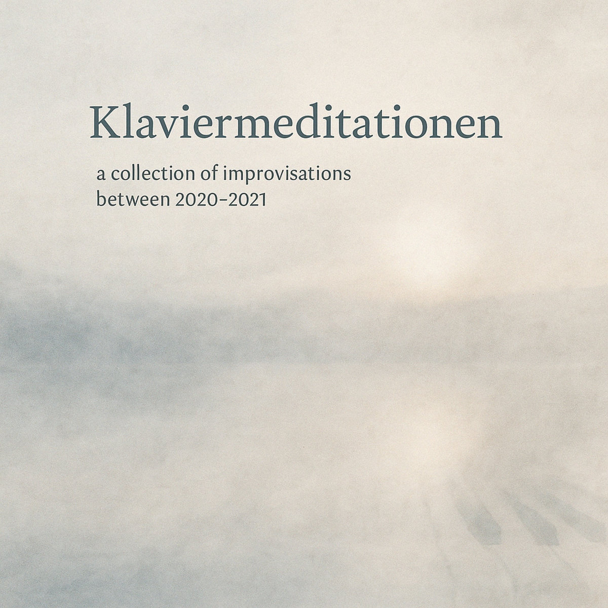

Klavier als Raum, nicht als Bühne.
Klaviermeditationen
a collection of unreleased improvisations – November 2021
Diese Aufnahmen entstanden früh am Morgen – direkt nach dem Aufwachen.
Der Kopf war leer, die Welt noch still.
Improvisationen ohne Ziel – nur Klang und Atem.
Jetzt exklusiv auf Bandcamp.